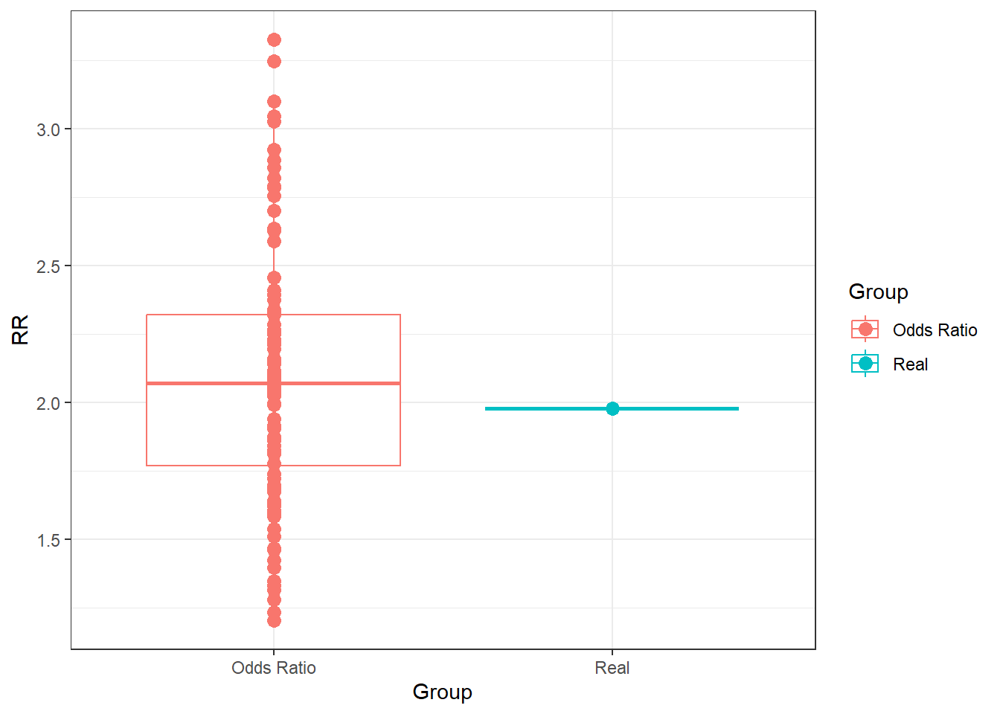

![]()
set.seed(1234)
pop <- data.frame(smoke = sample(c("Smokes", "NeverSmoked"), 1e6, prob = c(0.25, 0.75), rep= T))
pop[which(pop$smoke=="Smokes"), "cancer"] <- sample(c("Cancer", "Healthy"), sum(pop$smoke=="Smokes"), prob = c(0.05, 0.95), rep= T)
pop[which(pop$smoke=="NeverSmoked"), "cancer"] <- sample(c("Cancer", "Healthy"), sum(pop$smoke=="NeverSmoked"), prob = c(0.025, 0.975), rep= T)
# Plot the simulated population
library(ggplot2)
pop2 <- unique(pop)
for(i in 1:nrow(pop2)){
pop2[i, "counts"] <- sum(pop$smoke==pop2[i, "smoke"] & pop$cancer==pop2[i, "cancer"])
}
ggplot(pop2, aes(x = cancer, y = counts, fill = smoke)) +
geom_bar(stat = "identity") +
theme_bw() Why we cannot interpret relative risks in case-control studies
Quarto
R
Academia
statistics

Hello folks and happy new year! Back from my winter holidays, and after a couple of weeks of feeling quite sick, I am ready to resume my work both in teaching and research. With regard to this, today I would like to deviate from my usual focus on economic evaluations and focus on a more general statistical topic related to the calculation and interpretation of summary statistics for categorical data, particularly the Relative Risk and the Odds Ratio, in different contexts. Indeed, these are common measures computed within clinical trials with some binary outcome of interest (e.g. having or not having a disease) and represent also one of the simplest type of summary statistics students are introduced to in a basic statistics course. I bring this up since I am currently teaching in one such courses and I have found quite difficult to explain how to interpret these measures to students who lack a solid mathematical background. Leaving aside the actual calculation of the measures, which is trivial, it happens sometimes that students ask questions on why odds ratios can be interpreted in basically any study design context while this is not true for relative risks. Of course the answer is relatively straightforward to people who are familiar with such designs but for students I have realised myself that this is not automatic and in some cases I feel that my explanation does not reach them fully, although I am still at a loss of what I am missing. Thus, my idea to write on this blog a general example where I simulate some data to show the issues in interpreting relative risks in case-cohort study in the plainest and simplest way that I can possible think of. The hope is that, by forcing myself to write this down carefully, I will be able to identify a best way to explain and show this concept.
So, without further delay and with my apologies to all health economists who hoped for another post on CEA (sorry!), let me begin with presenting my example which is mostly inspired from another publicly available simulation example that can be found here.
Risks and Relative Risks
Let me start with setting up the notation I will use. Let’s imagine that we have a study, either a case-control or cohort study, in which the researchers are interested in estimating for a given patient population (of size \(N\)) a Relative Risk or Odds Ratio of a specific disease condition \(Y\) (\(0\)=absent,\(1\)=present) given the exposure status \(X\) (\(0\)=not exposed,\(1\)=exposed).
Then, we can compute an estimate for the Risk of having the disease given exposure for this population as:
\[ \text{Risk}=P(Y=1 \mid X=1) = \frac{\sum_i \mathbb{I}(Y_i=1 \mid X_i=1)}{\sum_i \mathbb{I}(Y_i=1 \mid X_i=1) + \sum_i \mathbb{I}(Y_i=0 \mid X_i=1)}, \]
that is the sum of all outcome values (remember that \(Y=1\) means presence of the disease) for all patients \(i=1,\ldots,N\) who are exposed (\(X=1\)) over the total number of exposed patients. Now, if we want the Relative Risk of having the disease for being exposed vs not exposed, then we need to compute:
\[ \text{RR}=\frac{P(Y=1 \mid X=1)}{P(Y=1 \mid X=0)}, \]
which corresponds to dividing the risk of having the disease when exposed to the risk when not exposed (\(X\)=0). Now, here things get interesting as how you interpret this quantity depends on the design of the study. Let’s assume that we have a cohort study, that is patients are sampled first based on their exposure status \(X\) and then we observe their outcome status \(Y\). This means that we can directly compute the two risks of having the disease when \(X=1\) and when \(X=0\) since we already know their exposure status. Thus, the quantity:
\[ \text{Risk}_{\text{cohort}}=P(Y=1 \mid X=1), \]
effectively corresponds to the risk or probability of having the disease in the study given that exposure is observed (and similarly the same applies for \(P(Y=1 \mid X=0)\)). Since the Relative Risk is simply the ratio of the two risks, then also RR can be computed and interpreted as the ratio of the two risks or, alternatively, how much more likely are exposed patients to have the disease compared to unexposed patients.
Things however change when we consider a different design of the study, such as a case-control study, where patients are sampled first based on their outcome status \(Y\) and then we observe their exposure status \(X\). Indeed, under this sampling scheme, you cannot compute \(P(Y=1 \mid X=1)\) or \(P(Y=1 \mid X=0)\) since you can only know the exposure status of each patient after the outcome has been observed. What you can estimate is instead the risk of having exposure when \(Y=1\) and when \(Y=0\). For example, the risk of being exposed given that patients have the disease is:
\[ \text{Risk}_{\text{case-control}}=P(X=1 \mid Y=1) = \frac{\sum_i \mathbb{I}(X_i=1 \mid Y_i=1)}{\sum_i \mathbb{I}(X_i=1 \mid Y_i=1) + \sum_i \mathbb{I}(X_i=0 \mid Y_i=1)}, \]
which of course is different from \(P(Y=1 \mid X=1)\), and similarly for \(P(X=1 \mid Y=0) \neq P(Y=1 \mid X=0)\). Thus, also the Relative Risk derived based on these probabilities:
\[ \text{RR}=\frac{P(X=1 \mid Y=1)}{P(X=1 \mid Y=0)}, \]
does not correspond to \(\frac{P(Y=1 \mid X=1)}{P(Y=1 \mid X=0)}\).
Odds and Odds Ratios
When referring to odds and Odds Ratios, instead, the situation is different due to the different nature of the computed measures. Indeed, the Odds of having the disease when exposed is the ratio between the probability of having the disease and the probability of not having the disease when exposed. In formulae, this is expressed as:
\[ \text{Odds}=\frac{P(Y=1 \mid X=1)}{P(Y=0 \mid X=1)}, \]
which is always interpreted in relative terms, that is as how much more chance you have of having the disease compared to not having the disease given that you are exposed. From this, we can derive the formula of the Odds Ratio of having the disease which corresponds to the ratio of the odds for having the disease when exposed vs when unexposed:
\[ \text{OR}=\frac{\frac{P(Y=1 \mid X=1)}{P(Y=0 \mid X=1)}}{\frac{P(Y=1 \mid X=0)}{P(Y=0 \mid X=0)}}, \]
which is interpreted as how many more odds you have of having the disease when exposed compared to when unexposed.
In the context of a cohort study, we can immediately see that, given that we first sample patients based on their exposure status \(X\), the OR can be directly interpreted without any issues since we can estimate all odds within the ratio. In the context of a case-control study, let us consider the odds of having the disease given that patients are exposed:
\[ \text{Odds}_{\text{case-control}}=\frac{P(Y=1 \mid X=1)}{P(Y=0 \mid X=1)}, \]
whose numerator and denominator can also be re-expressed using the conditional probability rule as:
\[ P(Y=1 \mid X=1)= \frac{P(Y=1)P(X=1 \mid Y=1)}{P(X=1)} \;\;\; \text{and} \;\;\; P(Y=0 \mid X=1)= \frac{P(Y=0)P(X=1 \mid Y=0)}{P(X=1)} \]
which leads to:
\[ \text{Odds(X=1)}_{\text{case-control}}=\frac{\frac{P(Y=1)P(X=1 \mid Y=1)}{P(X=1)}}{\frac{P(Y=0)P(X=1 \mid Y=0)}{P(X=1)}}, \]
Similarly, for the odds of being exposed given that the patients did not have the disease are:
\[ \text{Odds(X=0)}_{\text{case-control}}=\frac{\frac{P(Y=1)P(X=0 \mid Y=1)}{P(X=0)}}{\frac{P(Y=0)P(X=0 \mid Y=0)}{P(X=0)}}, \]
If we then calculate the Odds Ratio we get:
\[ \text{OR}_{\text{case-control}}=\frac{\frac{P(Y=1 \mid X=1)}{P(Y=0 \mid X=1)}}{\frac{P(Y=1 \mid X=0)}{P(Y=0 \mid X=0)}}=\frac{\frac{\frac{P(Y=1)P(X=1 \mid Y=1)}{P(X=1)}}{\frac{P(Y=0)P(X=1 \mid Y=0)}{P(X=1)}}}{\frac{\frac{P(Y=1)P(X=0 \mid Y=1)}{P(X=0)}}{\frac{P(Y=0)P(X=0 \mid Y=0)}{P(X=0)}}} = \frac{\frac{P(X=1 \mid Y=1)}{P(X=1 \mid Y=0)}}{\frac{P(X=0 \mid Y=1)}{P(X=0 \mid Y=0)}} = \frac{\frac{P(X=1 \mid Y=1)}{P(X=0 \mid Y=1)}}{\frac{P(X=1 \mid Y=0)}{P(X=0 \mid Y=0)}}. \]
The above formula shows how the OR can also be calculated based on \(P(X=1 \mid Y=1)\), \(P(X=0 \mid Y=1)\), \(P(X=1 \mid Y=0)\) and \(P(X=0 \mid Y=0)\), that is the probabilities of having a specific exposure status \(X\) given the outcome status \(Y\), which are directly available in a case-control study. Therefore, the OR is an effect size measure that is adequate for both case-control and cohort designs, because they all measure the same thing.
Example
Here I will try to empirically show the differences between RR and OR in a hypothetical scenario. First I generate data for a population of 1 million people, and this population will be divided in \(25\%\) who smoke and \(75\%\) who do not smoke, where smoking is the exposure variable \(X\). I set a RR of 2 when considering the probability of someone who smokes to get cancer, the disease variable \(Y\). Thus, I set \(5\%\) of the smoking population to have cancer, and \(2.5\%\) of the nonsmoking population to have cancer.
To simulate a cohort study we need to draw a sample from this population.
# Determine sample size with alpha = 5% and power = 80%
sample.size <- power.prop.test(p1 = 0.02, p2 = 0.01, power = 0.8)
# Now let's draw this amount of patients from each condition in our dataset.
## Draw a sample from smokers (we still don't know if they will get cancer or not)
sample.smokes <- pop[which(pop$smoke=="Smokes"),][sample(c(1:sum(pop$smoke=="Smokes")), sample.size$n, replace = F),]
## Draw a sample from nonsmokers (we still don't know if they will get cancer or not)
sample.neversmoked <- pop[which(pop$smoke=="NeverSmoked"),][sample(c(1:sum(pop$smoke=="NeverSmoked")), sample.size$n, replace = F),]
# Check our RR
a <- sum(sample.smokes$cancer == "Cancer")/sum(nrow(sample.smokes))
b <- sum(sample.neversmoked$cancer == "Cancer")/sum(nrow(sample.neversmoked))
a/b [1] 1.758621We see that everytime this script is run, it returns a different value for RR. This is because sampling error occurs, that is why alpha is \(5\%\) and power is \(80\%\). We expect a rate of false positives and false negatives. We can plot the differences in RR after 100 different measurements (which is equivalent to 100 different studies looking at the same population, each one finding a different RR value.
# Real RR
a <- sum(pop$smoke=="Smokes" & pop$cancer=="Cancer")/sum(pop$smoke=="Smokes")
b <- sum(pop$smoke=="NeverSmoked" & pop$cancer=="Cancer")/sum(pop$smoke=="NeverSmoked")
RealRR <- a/b
# Sample RR
SampleRR <- c()
for(i in 1:100){
sample.smokes <- pop[which(pop$smoke=="Smokes"),][sample(c(1:sum(pop$smoke=="Smokes")), sample.size$n, replace = F),]
sample.neversmoked <- pop[which(pop$smoke=="NeverSmoked"),][sample(c(1:sum(pop$smoke=="NeverSmoked")), sample.size$n, replace = F),]
a <- sum(sample.smokes$cancer == "Cancer")/sum(nrow(sample.smokes))
b <- sum(sample.neversmoked$cancer == "Cancer")/sum(nrow(sample.neversmoked))
SampleRR[i] <- a/b
}
ggplot(data = data.frame(RR = c(RealRR, SampleRR),
Group = c("Real", rep("Sample", 100))), aes(x = Group, y = RR))+ geom_boxplot(aes(colour=Group)) +
geom_point(size = 3, aes(colour=Group)) +
theme_bw()Now, let’s proceed to get the estimate of the OR in a case-control simulation. For a case-control study, we draw a sample from random people who have cancer, and the same number of people who do not have cancer, and check if they have smoked or not in the past.
# Define the sample size for a case-control study
library(epiR)
sample.size.cc <- epi.sscc(OR = 2, p0 = 0.2, power = 0.8, n = NA)$n.case
# Draw samples of people who have cancer or not.
sample.cancer <- pop[which(pop$cancer=="Cancer"),][sample(c(1:sum(pop$cancer=="Cancer")), sample.size.cc, replace = F),]
sample.healthy <- pop[which(pop$cancer=="Healthy"),][sample(c(1:sum(pop$cancer=="Healthy")), sample.size.cc, replace = F),]
# Determine 100 OR calculations
OR80 <- c()
for(i in 1:100){
sample.cancer <- pop[which(pop$cancer=="Cancer"),][sample(c(1:sum(pop$cancer=="Cancer")), sample.size.cc, replace = F),]
sample.healthy <- pop[which(pop$cancer=="Healthy"),][sample(c(1:sum(pop$cancer=="Healthy")), sample.size.cc, replace = F),]
a <- sum(sample.cancer$smoke == "Smokes")/sum(sample.healthy$smoke == "Smokes")
b <- sum(sample.cancer$smoke == "NeverSmoked")/sum(sample.healthy$smoke == "NeverSmoked")
OR80[i] <- a/b
}
# Plot differences
ggplot(data = data.frame(RR = c(RealRR, OR80),
Group = c("Real", rep("Odds Ratio", 100))),aes(x = Group, y = RR)) +
geom_boxplot(aes(colour=Group)) +
geom_point(size = 3, aes(colour=Group)) +
theme_bw()
Finally, let’s compare the OR and the RR obtained previously.
ggplot(data = data.frame(RR = c(RealRR, SampleRR, OR80),
Group = c("Real", rep("Risk Ratio", 100), rep("Odds Ratio", 100))),
aes(x = Group, y = RR)) +
geom_boxplot(aes(colour=Group)) +
geom_point(size = 3, aes(colour=Group))+
theme_bw()We can see very clearly than under optimal circumstances, the OR is very close to the RR, which in turn is a good, but far from perfect, estimate of the true risk. Not let’s try something forbidden by the rules of statistics. The Risk Ratio should not be calculated using a case-control design, but let’s do it here to show what it produces. Additionally, I will calculate an OR from the cohort study as well.
# Determine 100 forbidden RR calculations from case-control studies
forbiddenRR <- c()
for(i in 1:100){
sample.cancer <- pop[which(pop$cancer=="Cancer"),][sample(c(1:sum(pop$cancer=="Cancer")), sample.size.cc, replace = F),]
sample.healthy <- pop[which(pop$cancer=="Healthy"),][sample(c(1:sum(pop$cancer=="Healthy")), sample.size.cc, replace = F),]
smoked <- sum(sample.cancer$smoke == "Smokes") + sum(sample.healthy$smoke == "Smokes")
neversmoked <- sum(sample.cancer$smoke == "NeverSmoked") + sum(sample.healthy$smoke == "NeverSmoked")
a <- sum(sample.cancer$smoke == "Smokes")/smoked
b <- sum(sample.cancer$smoke == "NeverSmoked")/neversmoked
forbiddenRR[i] <- a/b
}
# Determine 100 OR calculations from cohort studies
allowedOR <- c()
for(i in 1:100){
sample.smokes <- pop[which(pop$smoke=="Smokes"),][sample(c(1:sum(pop$smoke=="Smokes")), sample.size$n, replace = F),]
sample.neversmoked <- pop[which(pop$smoke=="NeverSmoked"),][sample(c(1:sum(pop$smoke=="NeverSmoked")), sample.size$n, replace = F),]
a <- sum(sample.smokes$cancer == "Cancer")/sum(sample.smokes$cancer == "Healthy")
b <- sum(sample.neversmoked$cancer == "Cancer")/sum(sample.neversmoked$cancer == "Healthy")
allowedOR[i] <- a/b
}
# Plot differences
ggplot(data = data.frame(RR = c(RealRR, OR80, forbiddenRR, SampleRR, allowedOR),
Effect.size = c("Real",
rep("OR", 100),
rep("RR", 100),
rep("RR", 100),
rep("OR", 100)),
Study.type = c("Real",
rep("case-control", 100),
rep("case-control", 100),
rep("cohort", 100),
rep("cohort", 100))),
aes(x = Study.type, y = RR)) +
geom_boxplot(aes(colour=Effect.size)) +
geom_point(position = position_dodge(width=0.75), aes(colour=Effect.size))+
theme_bw()This shows something really interesting. We can see that the distributions of the “allowed” calculations are all similar, and they wander around the true risk figure. However, the “forbidden” calculation, which is the RR in a case-control study, has a really narrow distribution of values that never get close to the true figure.
Conclusion
Here I tried to explain in a visual and a theoretical way why the OR is an effect size measurement that can be calculated in either a cohort or a case-control study, because they are mathematically the same. However, the RR can only be calculated using a cohort study design, while a case-control will only be able to offer an OR, and that is mathematically true.
Hopefully this will make things easier to understand for my students!